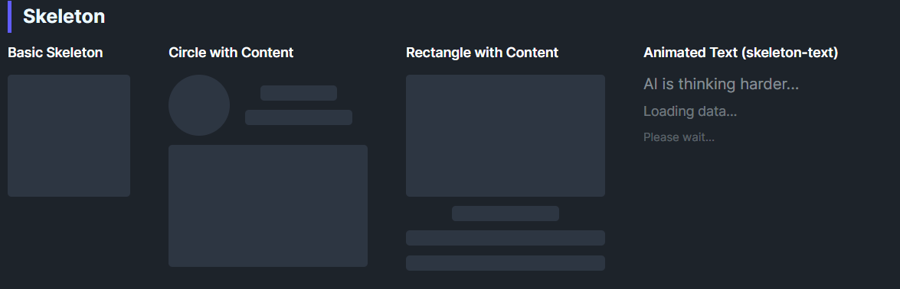

DaisySkeleton provides loading placeholders with a pulsing animation. It can render as a block (default) or animate text color when IsTextMode=True. Use it to indicate content is loading for avatars, text lines, cards, or any element you want to reserve space for.
| Mode | Description |
|---|---|
| Default | Animated opacity on a solid background with corner radius. |
TextMode (IsTextMode=True) |
Hides the block background and animates the content's opacity (skeleton-text style). |
<!-- Basic shapes -->
<controls:DaisySkeleton Height="32" Width="32" CornerRadius="16" />
<controls:DaisySkeleton Height="20" />
<controls:DaisySkeleton Height="20" Width="150" />
<!-- Avatar + text skeleton -->
<StackPanel Orientation="Horizontal" Spacing="12">
<controls:DaisySkeleton Width="48" Height="48" CornerRadius="24" />
<StackPanel Spacing="8" VerticalAlignment="Center">
<controls:DaisySkeleton Height="16" Width="80" />
<controls:DaisySkeleton Height="16" Width="120" />
</StackPanel>
</StackPanel>
<!-- Text mode -->
<controls:DaisySkeleton IsTextMode="True" Content="AI is thinking..." />DaisySkeleton includes built-in accessibility for screen readers via the AccessibleText property. The control is exposed as a progress indicator to assistive technologies.
| Property | Type | Default | Description |
|---|---|---|---|
AccessibleText |
string |
"Loading placeholder" |
Text announced by screen readers to describe what is loading. |
<!-- Default: announces "Loading placeholder" -->
<controls:DaisySkeleton Height="32" Width="32" />
<!-- Contextual: announces "Loading user avatar" -->
<controls:DaisySkeleton Height="48" Width="48" CornerRadius="24" AccessibleText="Loading user avatar" />
<!-- Contextual: announces "Loading article content" -->
<controls:DaisySkeleton Height="20" AccessibleText="Loading article content" />
<!-- Text mode with context -->
<controls:DaisySkeleton IsTextMode="True" Content="AI is thinking..." AccessibleText="AI generating response" />CornerRadius to mirror the final shape (e.g., round for avatars, small radius for text lines).AccessibleText to describe what content is being loaded (e.g., "Loading profile picture" or "Loading comments").